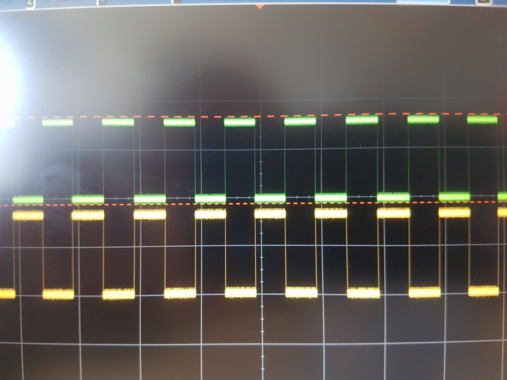

How to use Pulse Width Modulation driver
Introduction
This page describes how PWM could be configured, debugged and used on SAMA5D2 devices. Sincelinux-4.9-at91 the PWM could be configured using the new Linux PWM framework support called atomic PWM. This allow changing the PWM parameters without the need of disable and re-enable the correspondent PWM channel.
Supported devices
The following table specifies the pins on different boards which could be used as PWM outputs and the correspondent Linux PWM channels.| Board Name | Connector | Connector Pin | PWM Signal | Linux Channel |
| SAM9X60 EK | J14 (mikroBUS) | 16 (PWM) | PWM2 | 2 |
| SAMA5D27 WLSOM1 EK | J19 (mikroBUS 1) | 16 (PWM) | PWMH0 | 0 |
| J20 (mikroBUS 2) | 16 (PWM) | PWML0 | ||
| SAMA5D27 SOM1 EK | J25 (mikroBUS 1) | 1 (PWM) | PWML1 | 1 |
| J30 (mikroBUS 2) | 1 (PWM) | PWML0 | 0 | |
| SAMA5D2 Xplained | J20 | 1 | PWML2 | 2 |
| 2 | PWMH2 | |||
| J26 | 8 | PWML2 | ||
| 7 | PWMH2 | |||
| SAMA5D3 Xplained | J19 | PA21 | PWML0 | 0 |
| PA20 | PWMH0 | |||
| PA23 | PWML1 | 1 | ||
| PA31 | ||||
| PB27 | PWMH1 | |||
| PA22 | ||||
| SAMA5D4 Xplained | J7 | 2 | PWML0 | 0 |
| 5 | PWMH0 | |||
| 3 | PWML1 | 1 | ||
| 6 | PWMH1 | |||
| J8 | 8 | PWML0 | 0 | |
| 7 | PWMH0 | |||
| 3 | ||||
| 2 | PWML1 | 1 | ||
| 4 | ||||
| 6 | PWML2 | 2 | ||
| 5 | PWMH2 | |||
| J15 | 4 | PWML0 | 0 | |
| 26 | PWMH1 | 1 | ||
| 10 | PWML2 | 2 | ||
| 9 | PWMH2 | |||
| 33 | PWML3 | 3 | ||
| J17 | 4 | PWML3 | 3 | |
| J18 | 4 | PWML2 | 2 | |
| 8 | PWMH2 | |||
| J19 | 7 | PWML3 | 3 | |
| 8 | PWMH3 | |||
| J22 | 8 | PWML3 | 3 | |
| 7 | PWMH3 | |||
| J23 | 8 | PWML2 | 2 | |
| 7 | PWMH2 |
Kernel support
To enable the Linux kernel PWM support just enable the CONFIG_PWM flag:make menuconfig Device drivers -> Pulse-Width Modulation (PWM) SupportTo enable the SAMA5D2 PWM driver just enable the CONFIG_PWM_ATMEL flag:
make menuconfig
Device drivers ->
Pulse-Width Modulation (PWM) Support ->
Atmel PWM support
PWM configurations
General
Current Linux implementation supports changing of 3 PWM parameters (signal period, signal duty cycle, signal polarity) and to change PWM channel state (enable/disable). The Linux sysfs interface which could be used to configure the PWM parameters is located at:/sys/class/pwm/*The PWM chips which are present in the system are listed in
/sys/class/pwm
root@sama5d2-xplained:~# ls -l /sys/class/pwm/ total 0 lrwxrwxrwx 1 root root 0 Jun 6 16:06 pwmchip0 -> ../../devices/platform/ahb/ahb:apb/f802c000.pwm/pwm/pwmchip0The presence of
pwmchip0 suggest that there is one PWM chip on the system.
Available PWM channels
To check how many PWM channels could be configured thenpwm file could be used.
For instance, to check how many PWM channels supports PWM chip pwmchip0 above the following command could be used:
root@sama5d2-xplained:~# cat /sys/class/pwm/pwmchip0/npwm 4This means
pwmchip0 supports 4 PWM channels.
PWM channel export
To configure a PWM channel, fist, the PWM channel needs to be exported. To export a PWM channel the number of the channel needs to be written in/sys/class/pwm/pwmchipX/export file.
root@sama5d2-xplained:~# echo 2 > /sys/class/pwm/pwmchip0/exportAfter that, the PWM 2 channel is exported in sysfs and it’s parameters could be changed.
root@sama5d2-xplained:~# ls -l /sys/class/pwm/pwmchip0/ total 0 lrwxrwxrwx 1 root root 0 Jun 6 15:17 device -> ../../../f802c000.pwm --w------- 1 root root 4096 Jun 6 15:16 export -r--r--r-- 1 root root 4096 Jun 6 15:17 npwm drwxr-xr-x 2 root root 0 Jun 6 15:17 power drwxr-xr-x 3 root root 0 Jun 6 15:17 pwm2 lrwxrwxrwx 1 root root 0 Jun 6 15:17 subsystem -> ../../../../../../../class/pwm -rw-r--r-- 1 root root 4096 Jun 6 15:15 uevent --w------- 1 root root 4096 Jun 6 15:17 unexport root@sama5d2-xplained:~# ls -l /sys/class/pwm/pwmchip0/pwm2/ total 0 -r--r--r-- 1 root root 4096 Jun 6 15:18 capture -rw-r--r-- 1 root root 4096 Jun 6 15:18 duty_cycle -rw-r--r-- 1 root root 4096 Jun 6 15:18 enable -rw-r--r-- 1 root root 4096 Jun 6 15:18 period -rw-r--r-- 1 root root 4096 Jun 6 15:18 polarity drwxr-xr-x 2 root root 0 Jun 6 15:18 power -rw-r--r-- 1 root root 4096 Jun 6 15:18 ueventA new fresh exported signal has the following parameters:
period = 0 duty_cycle = 0 polarity = normal enable = 0 A
cat on the files from /sys/class/pwm/pwmchipX/pwmY will print these values.
capture file could be used to capture the PWM signal. The Atmel products doesn’t support this feature.
Period configuration
To configure period parameter for a PWM channel write the desired period value, in nanoseconds, inperiod file.
For instance, to configure a 0.5 seconds period for PWM 2 channel use the following command:
echo 500000000 > /sys/class/pwm/pwmchip0/pwm2/period
Duty cycle configuration
To configure duty cycle parameter for a PWM channel write the desired duty cycle value, in nanoseconds, induty_cycle file.
For instance, to configure a 0.25 seconds duty cycle for PWM 2 channel use the following command:
echo 250000000 > /sys/class/pwm/pwmchip0/pwm2/duty_cycle
Polarity configuration
Linux PWM implementation definesnormal and inversed polarities for PWM signals.
To configure signal polarity for a PWM channel write one of these strings to polarity file.
For instance, to configure inversed polarity for PWM 2 channel use the following command:
echo inversed > /sys/class/pwm/pwmchip0/pwm2/polarity
Enable/Disable PWM channels
To enable or disable a PWM channel write a1 or a 0 in the enable file.
For instance, to enable PWM 2 channel use the following command:
echo 1 > /sys/class/pwm/pwmchip0/pwm2/enableBelow is a picture with PWM signals (PWMH and PWML) on PWM channel 2, configured with above parameters, on SAMA5D2 Xplained board:  After a channel was exported and configured its parameters could be changed. Starting with
linux-4.9-at91 the parameters could be changed on the fly. With version below linux-4.9-at91, if a PWM channel was exported and configured a new configuration imply to first disable the channel, reconfigure and then re-enable it.
Configuring PWM channels via device tree
Besides the sysfs, a Linux PWM channel could be requested by other drivers (e.g. regulators, leds or backlight drivers) with a set of default parameters. This is done using thepwms binding.
For instance, the PWM regulator could request PWM channel 2 using the following device tree bindings:
pwm_regulator {
compatible = "pwm-regulator";
pwms = <&pwm0 2 500000000 0>;
regulator-name = "PWM_REGULATOR";
regulator-min-microvolt = <0>;
regulator-max-microvolt = <3300000>;
regulator-always-on;
};
- the first parameter of pwms binding specify the label of PWM controller in device tree - the second parameter specifies the PWM channel to be requested by PWM regulator driver
- the third parameter specifies the PWM signal period (in nanoseconds)
- the fourth parameter specifies the PWM signal polarity (
0 = normal, 1 = inversed) Debugging PWM
Linux offers a file in/sys/kernel/debug which could be used to see the state of PWM channels.
root@sama5d2-xplained:~# cat /sys/kernel/debug/pwm platform/f802c000.pwm, 4 PWM devices pwm-0 ((null) ): period: 0 ns duty: 0 ns polarity: normal mode: complementary trigger: none pwm-1 ((null) ): period: 0 ns duty: 0 ns polarity: normal mode: complementary trigger: none pwm-2 (sysfs ): requested enabled period: 500000000 ns duty: 250000000 ns polarity: normal pwm-3 ((null) ): period: 0 ns duty: 0 ns polarity: normal mode: complementary trigger: none--
| I | Attachment | Action | Size | Date | Who | Comment |
|---|---|---|---|---|---|---|
| |
linux4sam-pwm-documentation-pwm-signal-example.jpg | manage | 259.3 K | 2017-07-03 - 09:57 | ClaudiuBeznea | linux4sam pwm output |
{kind=link}
{kind=link}